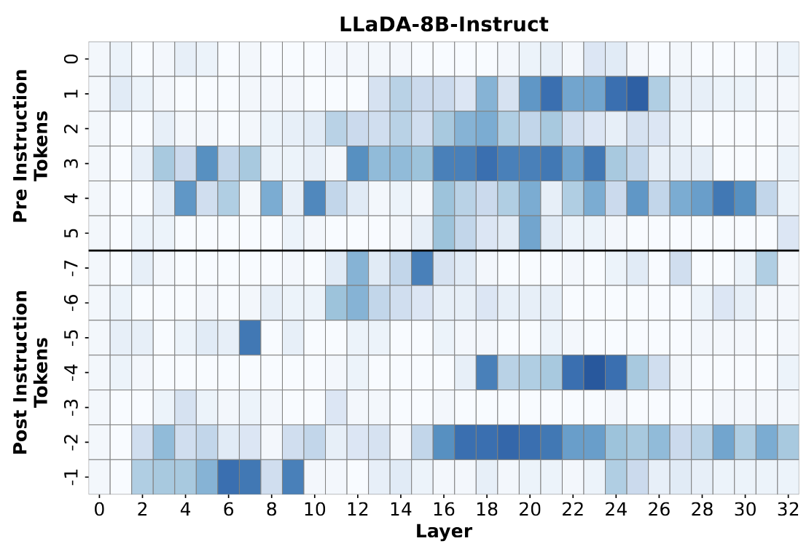
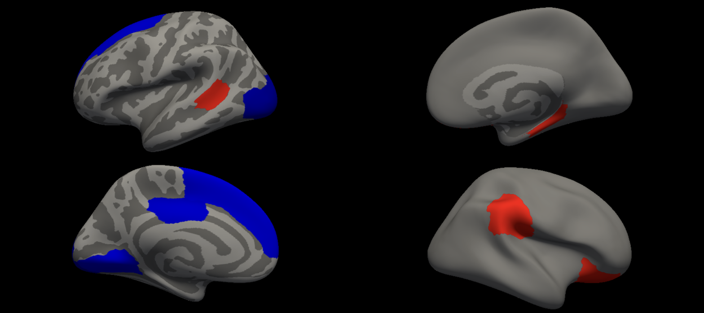
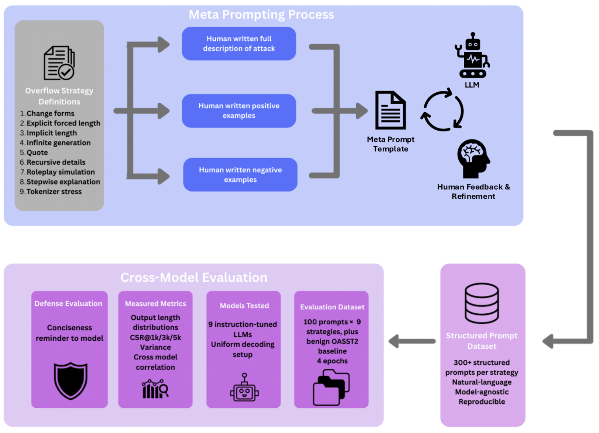

Adi Shnaidman |
|
|
I’m an AI researcher and incoming MSE student in Computer and Information Science at the University of Pennsylvania. My work focuses on large language models, particularly safety, robustness, mechanistic interpretability, and inference-time control. I study how internal representations relate to model behavior, how failures emerge under adversarial and real-world conditions, and how representation-level interventions can be used to evaluate and steer LLMs. My recent work at DeepKeep has focused on adversarial robustness, model evaluation, and real-time detection and mitigation for LLMs and AI agents. Philadelphia, PA · University of Pennsylvania Google Scholar / Semantic Scholar / LinkedIn / Email / Support my research |
|
My research focuses on understanding and controlling the behavior of large language models through their internal representations.
I’m particularly interested in identifying representation-level signals associated with harmful, unreliable, or non-robust behavior, and in understanding how these signals emerge and evolve during inference.
A central direction in my work is inference-time control: using internal model representations to characterize behavioral states and develop principled interventions that steer model behavior without retraining.
Research interests:
|
 |
Activation Steering for Masked Diffusion Language Models
Introduces an inference-time activation steering method for masked diffusion language models, using activation-level interventions to steer model behavior during reverse diffusion. |
|
 |
Structure–Function Tradeoffs in the Human Brain
Applies Pareto Task Inference (ParTI) to high-dimensional structural MRI features from the Human Connectome Project to probe structure–function relationships. |
|
 |
BenchOverflow: Measuring Overflow in Large Language Models via Plain-Text Prompts
Contributed to research on plain-text prompting strategies that induce excessive LLM generation without jailbreaks or policy circumvention. |